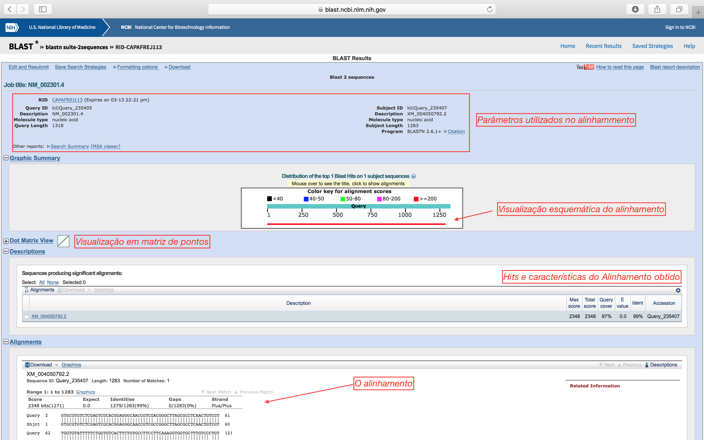
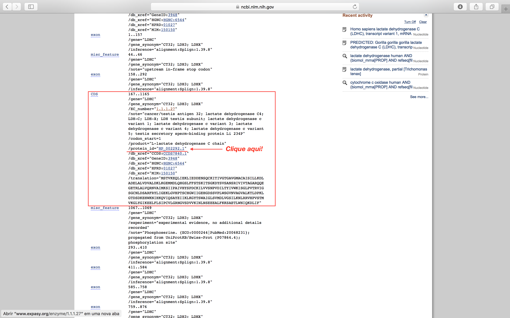

Alinhamentos e busca de similaridade
Nos passos que seguem, você deverá aprender:
- Alinhamento entre pares de sequências de nucleotídeos e aminoácidos.
- Busca de similaridades entre sequências.
- Usar informações estruturais no alinhamento consultando outros bancos de dados.
Antes de realizar este tutorial, é importante que os tutoriais 103 (GenBank & Cia.) e 104 tenham sido realizados.
Observação:
- Este tutorial foi construído apenas para fins didáticos. A reprodução dele para qualquer outro fim não é permitida e nem consentida.
Entre pares de sequências (Pairwise alignment)
Sequências de nucletídeos
Utilizando o BLAST, vamos alinhar as duas sequências abaixo, uma contra a outra. Como são sequências de nucleotídeos, teremos de usar inicialmente o BLASTN.
Para isso abra a página do blastn 2 sequences.
Além do link direto acima, o alinhamento entre duas sequências utilizando o BLAST também pode ser alcançado diretamente da página inicial de qualquer um dos "sabores" do BLAST, basta clicar na caixa de seleção "Align two or more sequences" que fica logo abaixo do campo destinado a sequência "Query".
Copie a sequência abaixo e cole no primeiro quadro:
>NM_002301.4
CGTGCGTGTCTCGAGTCGCACGGAGGGCAACCGTCGACGGGCTTAGCGCCTCAACTGTCGTTGGTGTATT
TTTCTGGTGTCACTTCTGTGCCTTCCTTCAAAGGTGGTGCTTTGTCCCTGTGGGTCATCTGTACTGATTG
CGCCAAGCAAAGCATTTGTTCTCCAAATGTCAACTGTCAAGGAGCAGCTAATTGAGAAGCTAATTGAGGA
TGATGAAAACTCCCAGTGTAAAATTACTATTGTTGGAACTGGTGCCGTAGGCATGGCTTGTGCTATTAGT
ATCTTACTGAAGGATTTGGCTGATGAACTTGCCCTTGTTGATGTTGCATTGGACAAACTGAAGGGAGAAA
TGATGGATCTTCAGCATGGCAGTCTTTTCTTTAGTACTTCAAAGATTACTTCTGGAAAAGATTACAGTGT
ATCTGCAAACTCCAGAATAGTTATTGTCACAGCAGGTGCAAGGCAGCAGGAGGGAGAAACTCGCCTTGCC
CTGGTCCAACGTAATGTGGCTATAATGAAATCAATCATTCCTGCCATAGTCCATTATAGTCCTGATTGTA
AAATTCTTGTTGTTTCAAATCCAGTGGATATTTTGACATATATAGTCTGGAAGATAAGTGGCTTACCTGT
AACTCGTGTAATTGGAAGTGGTTGTAATCTAGACTCTGCCCGTTTCCGTTACCTAATTGGAGAAAAGTTG
GGTGTCCACCCCACAAGCTGCCATGGTTGGATTATTGGAGAACATGGTGATTCTAGTGTGCCCTTATGGA
GTGGGGTGAATGTTGCTGGTGTTGCTCTGAAGACTCTGGACCCTAAATTAGGAACGGATTCAGATAAGGA
ACACTGGAAAAATATCCATAAACAAGTTATTCAAAGTGCCTATGAAATTATCAAGCTGAAGGGGTATACC
TCTTGGGCTATTGGACTGTCTGTGATGGATCTGGTAGGATCCATTTTGAAAAATCTTAGGAGAGTGCACC
CAGTTTCCACCATGGTTAAGGGATTATATGGAATAAAAGAAGAACTCTTTCTCAGTATCCCTTGTGTCTT
GGGGCGGAATGGTGTCTCAGATGTTGTGAAAATTAACTTGAATTCTGAGGAGGAGGCCCTTTTCAAGAAG
AGTGCAGAAACACTTTGGAATATTCAAAAGGATCTAATATTTTAAATTAAAGCCTTCTAATGTTCCACTG
TTTGGAGAACAGAAGATAGCAGGCTGTGTATTTTAAATTTTGAAAGTATTTTCATTTGATCTTTAAAAAA
TAAAAACAAATTGGAGACCTGTGAAAAAAAAAAAAAAAAAAAAAAAAAAAAAAAAAAA
Agora, copie a sequência abaixo e cole no segundo quadro:
>XM_004050792.2
GTGCGTGTCTCGAGTCGCACGGAGGGCAACCGTCGCCGGGCTTAGCGCCTCAACTGTCGTTGGTGTATTT
TTCTGGTGTCACTTCTGTGCCTTCCTTCAAAGGTGGTGCTTTGTCCTTGTGGGTCATCTGTACTGATTGC
GCCAAGCAAAGCATTTGTTCTCCAAATGTCAACTGTCAAGGAGCAGCTAATTGAGAAGCTAATTGAGGAT
GATAAAGACTCCCAGTGTAAAATTACTATTGTTGGAACTGGTGCCGTAGGCATGGCTTGTGCTATTAGTA
TCTTACTGAAGGATTTGGCTGATGAACTTGCCCTTGTTGATGTTGCATTGGACAAACTGAAGGGAGAAAT
GATGGATCTTCAGCATGGCAGTCTTTTCTTTAGTACTTCAAAGATTACTTCTGGAAAAGATTACAGTGTA
TCTGCAAACTCCAGAATAGTTATTGTCACAGCAGGTGCAAGGCAGCAGGAGGGAGAAACTCGCCTTGCCC
TGGTCCAACGTAATGTGGCTATAATGAAATCAATCATTCCTGCCATAGTCCATTATAGTCCTGATTGTAA
AATTCTTGTTGTTTCAAATCCAGTGGATATTTTGACATATATAGTCTGGAAGATAAGTGGCTTACCTGTA
ACTCGTGTAATTGGAAGTGGTTGTAATCTAGACTCTGCCCGTTTCCGTTACCTAATTGGAGAAAAGTTGG
GTGTCCACCCCACAAGCTGCCATGGTTGGATTATTGGAGAACATGGTGATTCTAGTGTGCCCTTATGGAG
TGGGGTGAATGTTGCTGGTGTTGCTCTGAAGACTCTGGACCCTAAATTAGGAACGGATTCAGATAAGGAA
CACTGGAAAAATATCCATAAACAAGTTATTCAAAGTGCCTATGAAATTATCAAGCTGAAGGGGTATACCT
CTTGGGCTATTGGACTGTCTGTGATGGATCTGGTAGGATCCATTTTGAAAAATCTTAGGAGAGTGCACCC
AGTTTCCACCATGGTTAAGGGATTATATGGAATAAAAGAAGAACTCTTTCTCAGTATCCCTTGTGTCTTG
GGGCGGAATGGTGTCTCAGATGTTGTGAAAATTAACTTGAATTCTGAGGAGGAGGCCCTTTTCAAGAAGA
GTGCAGAAACACTTTGGAATATTCAAAAGGATCTAATATTTTAAATTAAAGCCTTCTAATGTTCCACTGT
TTGGAGAACAGAAGATAGCAGGCTGTGTATTTTAAATTTTGAAAGTATTTTCATTTGATCTTTAAAAAAT
AAAAACAAATTGGAGACCTGTGA
Deixe o resto das opções da forma como estão e clique em BLAST.
É sempre recomendável clicar na caixa de seleção "Show results in a new window", para que os resultados sejam visualizados em uma nova janela/aba.
Após alguns minutos, você deverá ter um resultado como o descrito abaixo. Clique no local indicado para trocar para a página tradicional de resultados do BLAST:

- Na página tradicional, os resultados ficam mais acessíveis e são explicados na figura abaixo:

Neste caso, onde os identificadores da sequência (o nome que vem depois do >) são os códigos de registro do GenBank, o mesmo procedimento acima pode ser realizado, colocando apenas a descrição de cada sequência (sem o identificador >) nos campos da Query. Basta colocar NM_002301.4 no 1º campo e XM_004050792.2 no 2º campo. Assim, a tela de resultados já retornará links para consulta direta a anotação das sequências.
Perguntas:
- Você considera este alinhamento bom? Justifique utilizando os parâmetros do BLAST.
- Observe quantas diferenças existem entre estas duas sequências e onde elas estão.
- Sendo sequências de mRNA, você diria que os produtos proteicos delas possuem função relacionada?
Sequências de aminoácidos
Vamos agora abrir e verificar o registro do Genbank destas sequências. Para facilitar, abaixo estão os links direto para as entradas (abra em abas diferentes):
Vamos agora verificar nas entradas destas sequências, a região codificante para a proteína (CDS). Esta estará descrita nas features, de acordo com a figura abaixo:
- Role a página até encontrar CDS:

- Clique no local identificado na figura acima.
Agora você tem a sequência de aminoácidos da proteína resultante. Faça o mesmo para obter a sequência de aminoácidos que a outra sequência (XM_004050792.2) codifica.
Vamos alinhar as duas sequências de aminoácidos agora, utilizando o blast2sequences, na variação BLASTp.
Perguntas:
- Todas as diferenças encontradas no alinhamento das sequências de mRNA são encontradas nas sequências de aminoácidos?
- Você afirmaria que as trocas observadas dos aminoácidos influenciariam a estrutura da proteína? Explique.
Importância das informações estruturais em alinhamentos de aminoácidos
Considere que você esteja trabalhando com a seguinte sequência de uma amilase:
>1smd
GRTSIVHLFEWRWVDIALECERYLAPKGFGGVQVSPPNENVAIHNPFRPWWERYQPVSYK
LCTRSGNEDEFRNMVTRCNNVGVRIYVDAVINHMCGNAVSAGTSSTCGSYFNPGSRDFPA
VPYSGWDFNDGKCKTGSGDIENYNDATQVRDCRLSGLLDLALGKDYVRSKIAEYMNHLID
IGVAGFRIDASKHMWPGDIKAILDKLHNLNSNWFPEGSKPFIYQEVIDLGGEPIKSSDYF
GNGRVTEFKYGAKLGTVIRKWNGEKMSYLKNWGEGWGFMPSDRALVFVDNHDNQRGHGAG
GASILTFWDARLYKMAVGFMLAHPYGFTRVMSSYRWPRYFENGKDVNDWVGPPNDNGVTK
EVTINPDTTCGNDWVCEHRWRQIRNMVNFRNVVDGQPFTNWYDNGSNQVAFGRGNRGFIV
FNNDDWTFSLTLQTGLPAGTYCDVISGDKINGNCTGIKIYVSDDGKAHFSISNSAEDPFI
AIHAESKL
Os 3 resíduos que formam o sítio ativo da proteína e são essenciais à catálise são: D (...FRIDAS...), E (...YQEVID...) e D (...NHDNQR...). Você pode obter mais informações desta sequência no UniProtKB, com o código P04745.
Considere ainda que você conhece a proteína abaixo e sabe que se trata de uma amilase:
>1bf2
DVIYEVHVRGFTEQDTSIPAQYRGTYYGAGLKASYLASLGVTAVEFLPVQETQNDANDVV
PNSDANQNYWGYMTENYFSPDRRYAYNKAAGGPTAEFQAMVQAFHNAGIKVYMDVVYNHT
AEGGTWTSSDPTTATIYSWRGLDNATYYELTSGNQYFYDNTGIGANFNTYNTVAQNLIVD
SLAYWANTMGVDGFRFDLASVLGNSCLNGAYTASAPNCPNGGYNFDAADSNVAINRILRE
FTVRPAAGGSGLDLFAEPWAIGGNSYQLGGFPQGWSEWNGLFRDSLRQAQNELGSMTIYV
TQDANDFSGSSNLFQSSGRSPWNSINFIDVHDGMTLKDVYSCNGANNSQAWPYGPSDGGT
STNYSWDQGMSAGTGAAVDQRRAARTGMAFEMLSAGTPLMQGGDEYLRTLQCNNNAYNLD
SSANWLTYSWTTDQSNFYTFAQRLIAFRKAHPALRPSSWYSGSQLTWYQPSGAVADSNYW
NNTSNYAIAYAINGPSLGDSNSIYVAYNGWSSSVTFTLPAPPSGTQWYRVTDTCDWNDGA
STFVAPGSETLIGGAGTTYGQCGQSLLLLISK
O registro do SwissProt para esta sequência P10342 mostrará que é realmente uma amilase, no entanto, iremos considerar que não temos esta informação.
Para identificar possíveis resíduos candidatos na sequência 1bf2 que podem participar do sítio ativo, faremos alinhamento com 2 diferentes algorítmos: o do BLAST e o do Smith-Waterman.
-
Obtenha o alinhamento das sequências acima utilizando o blast2sequences, na variação BLASTp.
-
Obtenha o alinhamento também com o algorítmo Smith-Waterman do EBI (European Bioinformatics Institute).
Vamos agora comparar os resultados obtidos a um alinhamento baseado em estrutura. Neste, os resíduos de aminoácidos são alinhados de acordo com a sua posição na estrutura tridimensional da proteína (portanto, só é possível quando as duas sequências possuem estruturas resolvidas). Isto pode ser realizado utilizando o SALIGN, vinculado a ModWeb, um servidor para modelagem computacional de proteínas do grupo que criou o programa Modeller (SaliLab):
- Coloque os códigos 1smd e 1bf2, em cada linha, no campo “Enter 4-letter code(s) to choose PDB structures”, de acordo como demonstrado nas figuras abaixo.
- Clique em
Continue.

Os resultados podem demorar alguns minutos para aparecerem.
-
O arquivo deste alinhamento pode ser baixado AQUI.
-
Abra o arquivo do alinhamento no ClustalX ou no Jalview (veja o tutorial 104).
Analise cuidadosamente cada um dos alinhamentos obtidos. Verifique a diferença entre o alinhamento do BLAST e os algoritmos de SW e do SALIGN.
Pergunta:
- Os alinhamentos de sequência e de estrutura identificam os mesmos resíduos em 1bf2 como equivalentes aos resíduos do sítio ativo em 1smd?
Questões desafios
- Em qual janela (frame) está codificada a proteína nas sequências
NM_002301.4eXM_004050792.2? - Os gaps no alinhamento estrutural tendem a ser associados com elementos de estrutura secundária (alfa-hélices ou fitas-beta) ou regiões de loop? Justifique.